Fewer context switches
Capture, search and launch from wherever you already are. Overlays appear over your work and leave without a trace.
For Windows · local-first · keyboard-first
It says Prepare Q4 carrier review.
It doesn't say what to do next, so you look at it for a week. Rumo splits the big thing from the next thing, and keeps every next thing one keystroke away.
Windows · no account · no cloud · your data is a folder on your PC
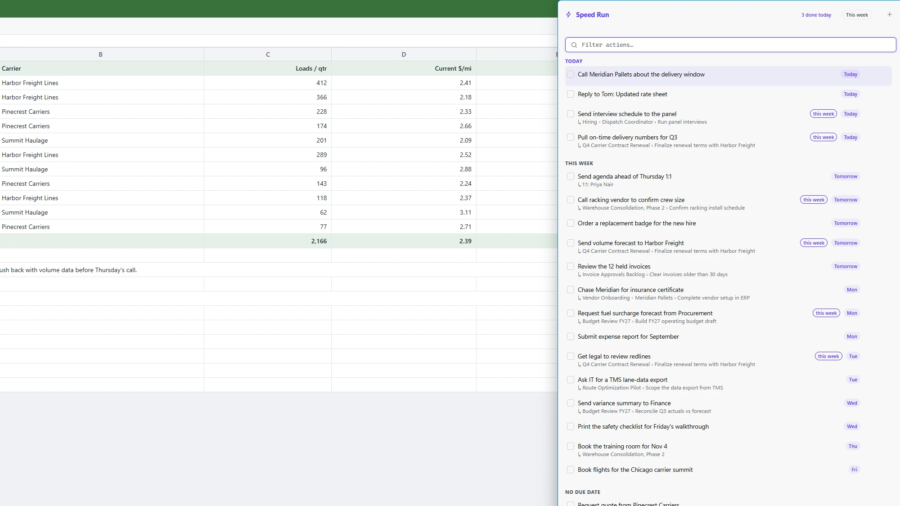
8:52You open the laptop to finish one thing. Outlook has other plans.
9:20A Slack message asks for a number. You know the file exists. You just can't remember which folder.
10:05Someone says "can you look at the PO?" on a call. You nod. Nothing is written down.
11:40You glance at your to-do list. Prepare Q4 carrier review. It's been there since the 14th.
None of that is a time-management problem. It's a context-switching problem, and a list that never tells you the next move.
The one idea
Most to-dos are five steps wearing one name. They stall, and a list of stalled things gives you no feeling of progress. Rumo keeps the two apart.
Prepare Q4 carrier performance review
no next actionMeaningful, but not something you can do at 9:05 on a Tuesday.
Small, physical, doable. These are what you actually tick off.
An open to-do with no open action is stalled, shown in red as no next action. That is exactly the multi-step thing that quietly stops moving. One tap shows only those.
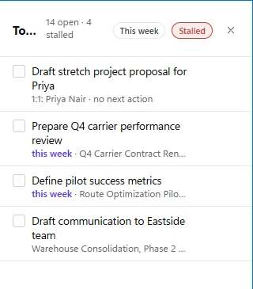
A day with Rumo
Dana runs operations at a regional freight company (fictional, like every name on this page). These are real screens from Rumo, loaded with her week.
Someone asks for a volume forecast. Press CtrlI over whatever is on screen, type it, attach it to the right project with @. You never open Rumo. You never lose your place.
Select text first and it pre-fills. With Classic Outlook in front it captures the email; with Slack, the message, and the action later reopens exactly that thread.
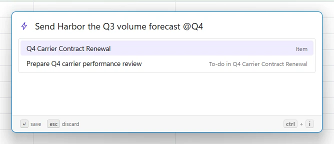
Press `. Speed Run slides in from the edge with every open action across every project, grouped by when it's due. Space ticks one off. There's no "which project was that under?"
Checked a box by mistake? CtrlZ. Rumo says "Done, with Undo" instead of asking "are you sure?".
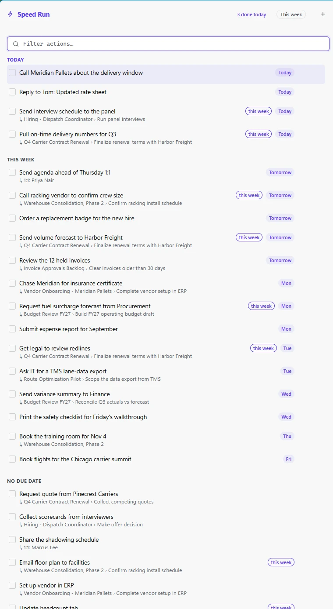
F1 opens a search over your projects, quick launches and reference folders. Type carrier, hit Enter, and you're in the right folder. Slots on CtrlF2 to F12 jump straight to the sites and folders you open forty times a day.
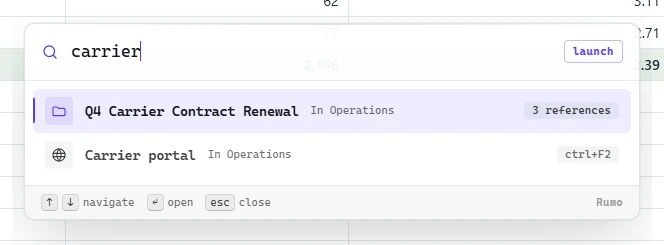
CtrlShift0 reads what you selected and does the sensible thing. A short phrase becomes an action. A reference like PO009094 opens a lookup of that row in your own spreadsheet. A long paragraph opens your prompt library, ready to summarise or tidy it.
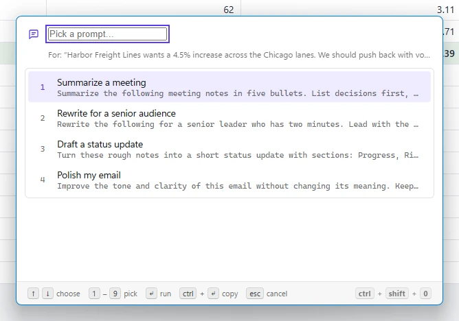
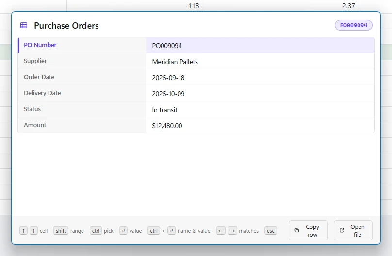
The Done view lists what you completed, grouped Today, Yesterday, Earlier this week. It sounds minor. It is the point: the small, honest evidence that the day moved.
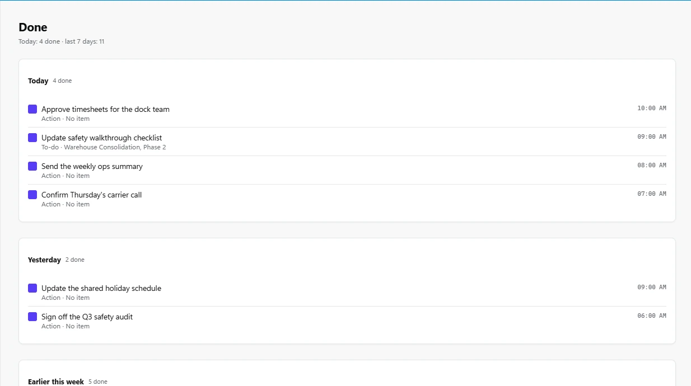
What it's good at
Capture, search and launch from wherever you already are. Overlays appear over your work and leave without a trace.
Break the vague into the next physical step. Everything open lives in one list, with due dates like "next week" understood.
Rumo points at your folders, files, sites and (in Classic Outlook and Slack) real emails and messages. Nothing is imported or moved.
Text shortcuts that expand as you type, with live dates: {date+7d} becomes next week's date. Pastype types your clipboard into fields that block pasting.
No account, no cloud, no telemetry. Undo instead of confirmations. A log and one-click backups, because it's your data and it should be safe.
Tutorial
There is no forced tour. Start in the main window and let the shortcuts reveal themselves when you need them.
Open Rumo from the tray icon and press Add item. An item is anything you manage: a project, a person, a recurring errand, a text shortcut. Name it, pick Project, and let Rumo create a folder for it under a work lane. A default lane exists from the first run, so there is nothing to set up.
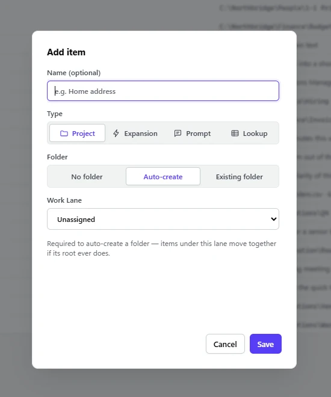
Every item carries the same five: notes, a root folder, to-dos, references (folders, files, sites) and actions. Add a to-do, then press A on it to file its first action. That's the whole system.
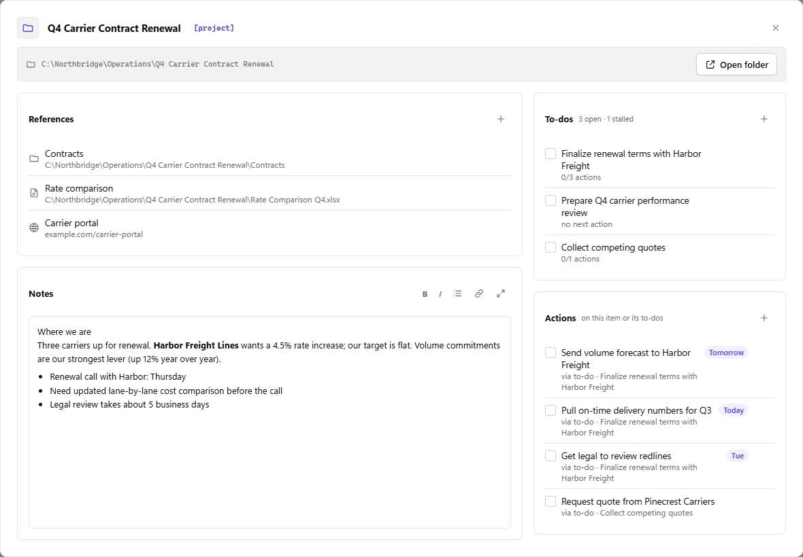
The This week view splits your backlog from this week's sprint. Move the few to-dos that matter into the sprint; the rest can wait without nagging you.
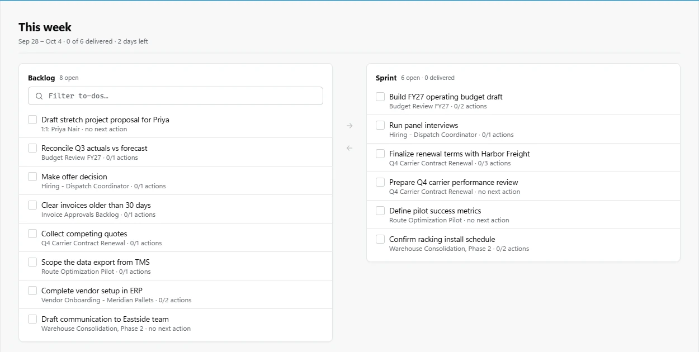
An Expansion pairs a short trigger like ;meet with text that appears as you type. Dates resolve on the spot, and the editor shows a live preview, so you can see what it will say before it does.
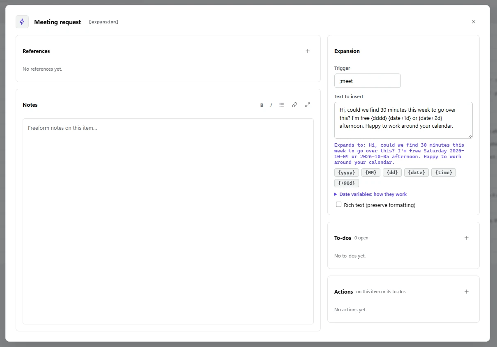
Save the instructions you keep retyping. Mark where the selected text goes with {}, then run a prompt on any selection from anywhere.
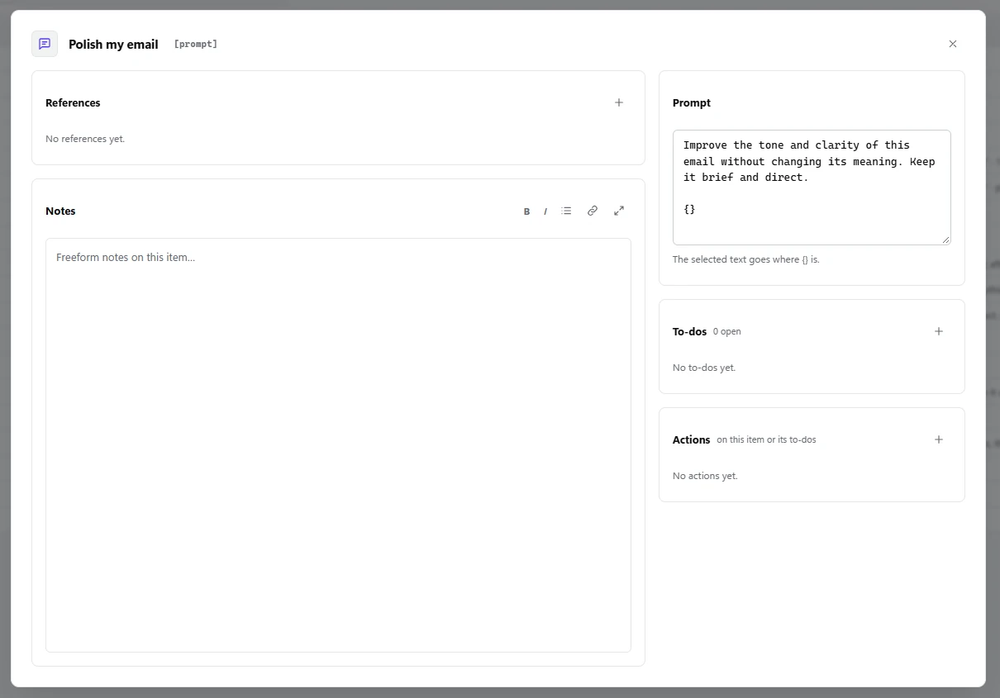
Every one of these works from any app. The main window teaches them as you go, and Shortcuts in the sidebar lists the full set.
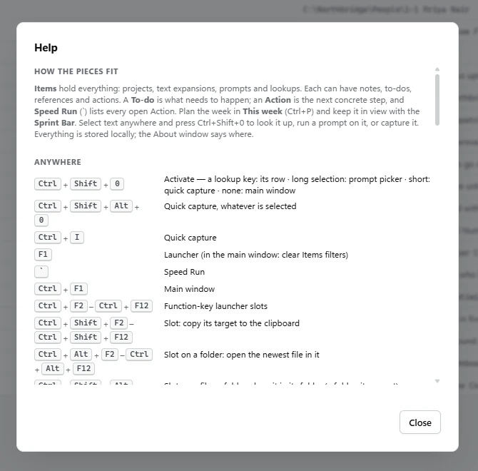
Why it exists
Rumo was made to fight a specific feeling: being extremely busy and still not feeling that anything moved forward.
It organizes your work context in a way that makes sense to you. You get to the right place faster, you switch context far less, and you stay in the flow and focused.
And as AI takes on more of the doing, the ability to orchestrate your own demands becomes a core skill. Managing the work well is what clears the space to create, to innovate, and to move things forward.
I ran this system by hand for more than a year before it became software. Every feature is something I got tired of not having.
Your data is plain files on your disk. No account, no sync server, no usage tracking, ever. A personal system shouldn't make you feel watched.
Everything has a shortcut, but you start in a normal window that shows you the shortcuts. No wall of onboarding.
If something here contradicts a year of daily use, the daily use wins.
Rumo is early (version 0.1) and not publicly available yet. Tell me you'd like to know more and I'll get back to you personally.
Windows 10 and 11 · built by one person, and honest about being early
No. Everything lives in your own folders and a small data folder on your PC. There is no account, no cloud and no telemetry.
Your items are plain JSON and your folders are normal folders on your disk. Nothing is locked in. There's also Export and Import, and automatic daily backups.
No. It sits on top of them. It captures an email or a Slack message as an action that reopens that exact thread later, and leaves the rest where it is.
Not yet. Email capture works with Classic Outlook. In the new Outlook, Ctrl+I falls back to capturing selected text.
Occasionally. CtrlI is italic in many editors, for instance, and Rumo takes it. That trade is knowingly accepted, and the cheat-sheet above lists every global key so you can see where they might collide.
No, and none is planned. Windows only, one person per install.